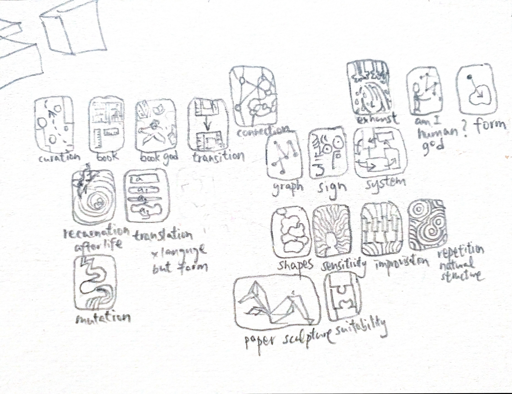

All the slides are from one picture that I have drawn. I regard that as a visual mapping of how I see myself as a curator, a composer, got lost in playing around with abstract structures, and returning to a humancentric curation that needs sensitive, that works with people.
This is my preparation before meeting Cristina's first tutor session.
She asked each of us to prepare a map of the ideas, artworks that dominant our research.
What do I need? What medium works for me?
I think I have already done the map when I was making the Pecha Kucha slideshow about what have I done in the past few months.
All the slides are from one picture that I have drawn. I regard that as a visual mapping of how I see myself as a curator, a composer, got lost in playing around with abstract structures, and returning to a humancentric curation that needs sensitive, that works with people.


Translation
My idea of thinking curation as an art that put artworks into shapes that fit together comes from me reading an excerpt of Walter Benjamin's "The Task of a Translator", where his task is not to perserve meaning of the original work, but to allow the language and the meaning of the work to mutate over time. Any translation will change the literature, even slightly, thus killing the literature, but at the same time give an after life to the literature.
The greatest literature will have a high translatibility so that even meaning or language is mutated, the spirit, the content of thoughts remain. And in these case, the task of a translator is more like an artist, who do not translate the origin word by word but translate it holistically so that he can fit the literature into a into a language that fits the current era, allow people to see the light of the spirit of the literature shinning through the mutated language.

Curation
Curator is similar, to put an artwork in an exhibition space already kill the original artwork, the meaning has changed, the sense of the artwork has altered. The task of a curator, I propose, is to give afterlifes to all the artworks involved, so that all artworks fits together, it is a bit like dramaturgy, finding what could go together, but in a slightly subtle sense. Curator himself is thus also an artist that need extra sensitivity in being self-conscious and in seeing how shapes (imagine each artwork as a 3d shape) fit each other.
Abstract structures oftentimes regard mapping as a graph, which is dots connecting with lines. Albeit I always find my rushing overexcited drive here, it overlooked at something crucial, something humane. In a graph, the connections between the dots (be it an idea or an artwork or literally anything) are explicity and clear. A lot of time needed to be spent to figure out these connections before actually realizing the point that you want to make. However, the manifestation of things are complex and we cannot always see through the connection of things, connections most of the time are supposed to be subtle, tacit, untalkable or irrational. Instead of thinking a map as dots and lines, I want to try seeing a map as a picture, where the position of the shapes, the way they are arranged already implicitly expressed the complex connections between things.
Therefore, I want to try studying shape in a curatorial sense. How can I sculpt or make shapes so that they fit together. I always work with paper and I also have somehow collected quite an amount of trash, so I want to give a place in the world for them to fit in. I want to start working with paper sculpture and book binding. Book binding with needles might be, in my view, a slightly natural/ nondestructive way to bind papers instead of glue. I might use the techniques for book binding in my paper sculpture.